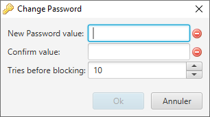

When using the token for the first time or after a token update, a first personalization must be done. This is achieved by selecting the menu entry 'File' → 'First initialization'.
The only mandatory field is the 'User password'. This is the main password that protects the data saved into the token. Note that this password can be changed at any time (assuming that you are authenticated) through the menu entry 'File' → 'Change Password'.
You may want to initialize the token with a previous backup. This is performed by enabling the 'Use this backup file' check-box, giving the path to the file and its associated password. This action can only be done on a non personalized token. A token is considered as personalized as soon as a password is set.
Finally, launch the token personalization by clicking on the 'Personalize' button. When the message 'Done !' is displayed, the token is ready to use.